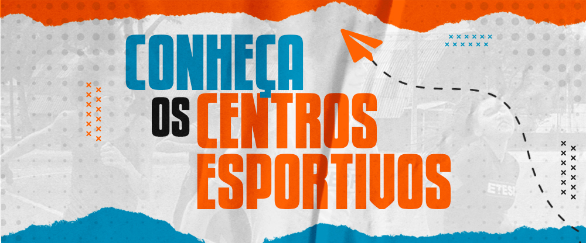
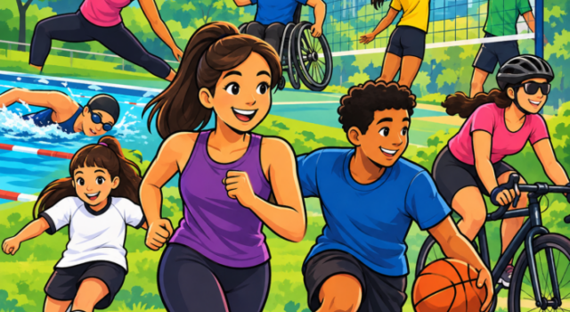

COMECE POR AQUI
Oportunidades para explorar
Use os filtros para encontrar um ponto de partida. Antes de sair, confirme horários, vagas e regras diretamente com a instituição responsável.
Use os filtros e clique em Buscar oportunidades para ver os locais.

Divulgação · Prefeitura de São Paulo
GratuitoFonte oficial
Zona Sul · Vila Clementino
Centro Esportivo Ibirapuera
Um dos centros esportivos municipais para consultar aulas e atividades abertas à população.
- Endereço
- Rua Pedro de Toledo, 1591
- Como participar
- Faça a carteirinha e confirme na unidade
Ver centros esportivos →
GratuitoFonte oficial
Centro · Ponte Pequena
Centro Esportivo Tietê
Equipamento municipal com opções esportivas e de lazer. A programação deve ser confirmada com a administração local.
- Endereço
- Avenida Santos Dumont, 843
- Como participar
- Consulte aulas e carteirinha
Consultar programação →
GratuitoFonte oficial
Zona Leste · Vila Formosa
CERET · Centro Esportivo Trabalhadores
Referência municipal para esporte e lazer. Consulte a unidade para saber atividades, horários e requisitos.
- Endereço
- Rua Canuto de Abreu, s/n
- Como participar
- Confirmação direta com o centro
Ver informação da Prefeitura →

Divulgação · Rede CEU
GratuitoFonte oficial
Toda a cidade · Rede CEU
Programação esportiva dos CEUs
Atividades e eventos em diferentes unidades. Pesquise a programação pelo CEU, modalidade e período que fazem sentido para você.
- Regiões
- Rede de CEUs de São Paulo
- Como participar
- Consulte cada atividade
Abrir programação dos CEUs →
Consulte valoresFonte oficial
Oeste · Butantã
Centro Esportivo Butantã
Centro municipal para procurar práticas em quadra, atividade física e lazer na região oeste.
- Endereço
- Rua Dr. Ernâni da Gama Corrêa, 367
- Como participar
- Confirme diretamente na unidade
Ver lista completa →
Programação variávelFonte oficial
Toda a cidade · Sesc São Paulo
Esporte e atividade física no Sesc
Consulte as unidades e atividades disponíveis por data, público e modalidade antes de planejar sua visita.
- Regiões
- Diversas unidades na capital
- Como participar
- Confira condições na programação
Encontrar uma unidade →
Nenhuma oportunidade corresponde a estes filtros. Tente ampliar a região ou o interesse.